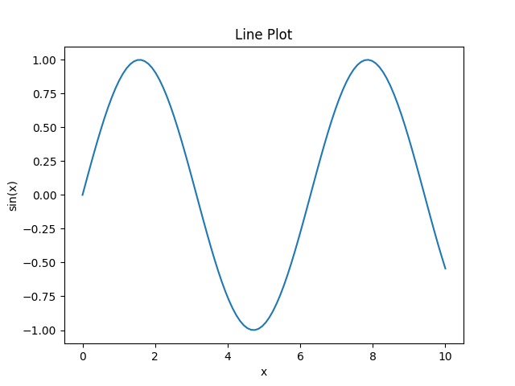
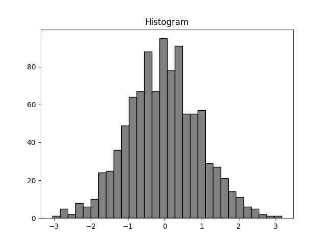
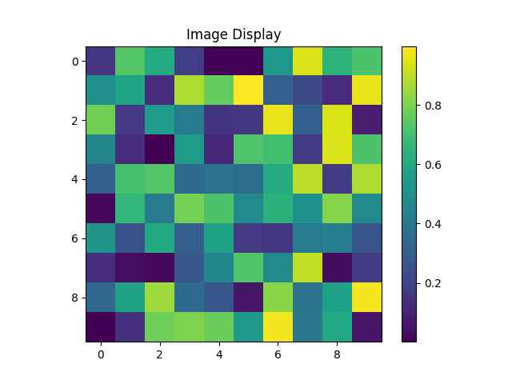
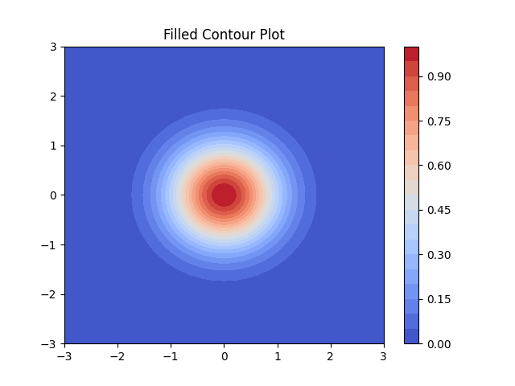
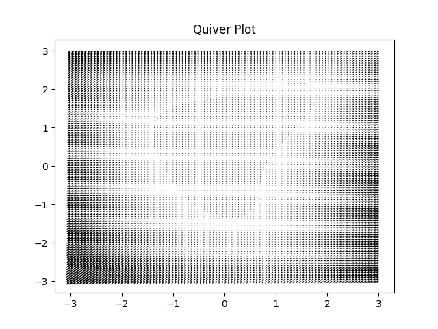
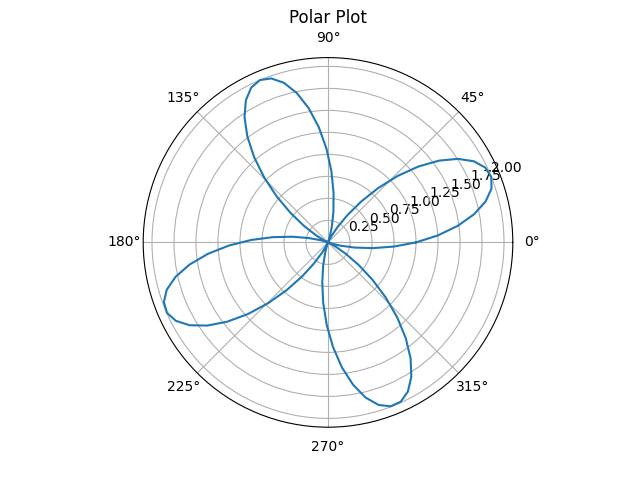
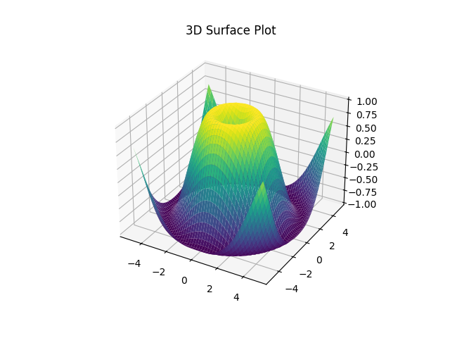
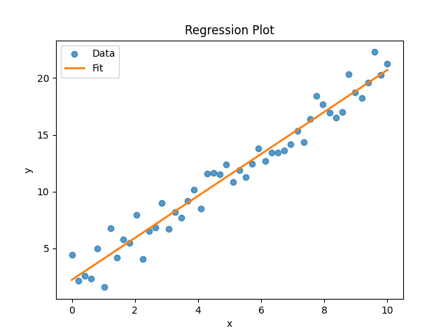

import numpy as npimport matplotlib.pyplot as pltx = np.linspace(0, 10, 100)y = np.sin(x)# サイン波を折れ線で描画plt.plot(x, y)plt.xlabel('x')plt.ylabel('sin(x)')plt.title('Line Plot')plt.show()

Line Plot
散布図
import numpy as npimport matplotlib.pyplot as pltnp.random.seed(0)x = np.random.rand(50)y = np.random.rand(50)# x の値で色分けした散布図plt.scatter(x, y, c=x, cmap='viridis', marker='o')plt.xlabel('X')plt.ylabel('Y')plt.title('Scatter Plot')plt.colorbar()plt.show()
import numpy as npimport matplotlib.pyplot as pltdata = np.random.randn(1000)# 分布をヒストグラムで可視化plt.hist(data, bins=30, color='gray', edgecolor='black')plt.title('Histogram')plt.show()

Histogram
箱ひげ図
import numpy as npimport matplotlib.pyplot as pltdata = [np.random.randn(100) + i for i inrange(4)]# 複数系列の分布を箱ひげ図で比較plt.boxplot(data)plt.title('Box Plot')plt.show()
import numpy as npimport matplotlib.pyplot as pltimg = np.random.rand(10, 10)# 2D 配列を画像として表示plt.imshow(img, cmap='viridis')plt.colorbar()plt.title('Image Display')plt.show()

Image Display
等高線図
import numpy as npimport matplotlib.pyplot as pltx = np.linspace(-3, 3, 100)y = np.linspace(-3, 3, 100)X, Y = np.meshgrid(x, y)Z = np.exp(-(X**2+ Y**2))# 等高線の塗りつぶしplt.contourf(X, Y, Z, levels=20, cmap='coolwarm')plt.colorbar()plt.title('Filled Contour Plot')plt.show()

Filled Contour Plot
クワイバー
import numpy as npimport matplotlib.pyplot as pltY, X = np.mgrid[-3:3:100j, -3:3:100j]U =-1- X**2+ YV =1+ X - Y**2# ベクトル場の可視化plt.quiver(X, Y, U, V)plt.title('Quiver Plot')plt.show()

Quiver Plot
極座標プロット
import numpy as npimport matplotlib.pyplot as plttheta = np.linspace(0, 2*np.pi, 100)r =1+ np.sin(4*theta)# 極座標で描画ax = plt.subplot(projection='polar')ax.plot(theta, r)ax.set_title('Polar Plot')plt.show()

Polar Plot
3D サーフェスプロット
import numpy as npimport matplotlib.pyplot as pltfrom mpl_toolkits.mplot3d import Axes3DX = np.linspace(-5, 5, 50)Y = np.linspace(-5, 5, 50)X, Y = np.meshgrid(X, Y)Z = np.sin(np.sqrt(X**2+ Y**2))fig = plt.figure()ax = fig.add_subplot(projection='3d')# 3D サーフェスを描画ax.plot_surface(X, Y, Z, cmap='viridis')ax.set_title('3D Surface Plot')plt.show()

3D Surface Plot
回帰直線付き散布図
import numpy as npimport matplotlib.pyplot as pltnp.random.seed(1)x = np.linspace(0, 10, 50)noise = np.random.normal(scale=1.2, size=x.size)y =1.8* x +2.5+ noiseslope, intercept = np.polyfit(x, y, 1)y_fit = slope * x + intercept# 回帰直線を重ねるplt.scatter(x, y, color='tab:blue', alpha=0.75, label='Data')plt.plot(x, y_fit, color='tab:orange', linewidth=2, label='Fit')plt.xlabel('x')plt.ylabel('y')plt.title('Regression Plot')plt.legend()plt.show()

Regression Plot
残差プロット
import numpy as npimport matplotlib.pyplot as pltnp.random.seed(2)x = np.linspace(0, 12, 60)noise = np.random.normal(scale=1.5, size=x.size)y =2.2* x -1.0+ noiseslope, intercept = np.polyfit(x, y, 1)y_fit = slope * x + interceptresiduals = y - y_fitfig, axes = plt.subplots(2, 1, figsize=(6, 7), sharex=True)# 上段: 元データと回帰直線axes[0].scatter(x, y, color='tab:blue', alpha=0.75, label='Data')axes[0].plot(x, y_fit, color='tab:orange', linewidth=2, label='Fit')axes[0].set_ylabel('y')axes[0].set_title('Residuals Plot')axes[0].legend()# 下段: 残差axes[1].axhline(0, color='gray', linewidth=1)axes[1].scatter(x, residuals, color='tab:green', alpha=0.75)axes[1].set_xlabel('x')axes[1].set_ylabel('Residuals')plt.tight_layout()plt.show()